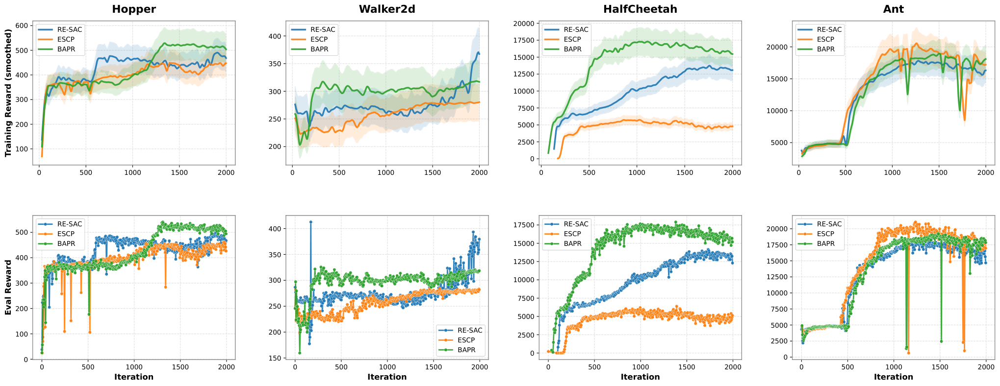

Contraction of the BAPR Bellman operator, a counterexample sharp threshold, and an error budget are machine-verified in Lean 4: 22 theorems, 1,145 lines, no sorry.
Abstract
Real-world control systems frequently operate under piecewise stationary conditions, where dynamics remain stable for extended periods before undergoing abrupt regime changes. Standard robust RL methods face a fundamental dilemma: a globally conservative policy wastes performance during stable periods, while a locally adaptive policy risks catastrophic failure when the regime changes undetected. We propose BAPR (Bayesian Amnesic Piecewise-Robust SAC), which unifies Bayesian Online Change Detection (BOCD) with robust ensemble RL. The BAPR operator – a convex combination of mode-conditional Bellman operators weighted by a frozen belief distribution – is a $γ$-contraction. A complementary counterexample, machine-verified in Lean 4, establishes a sharp boundary: when beliefs depend on the Q-function, the contraction factor becomes $γ+ λΔ$ (where $Δ$ is the mode reward gap), and contraction fails exactly when $γ+ λΔ\geq 1$. We derive a component-wise formal error budget for the abstract operator – every component machine-verified – bounding post-switch recovery; the budget applies to the abstract mode-mixture operator and inherits to the implemented shared-critic algorithm only through the frozen-parameter design intuition. All results are formally verified with no sorry (1,145 lines across 3 Lean 4 files, 22 machine-verified theorems). BOCD drives an adaptive conservatism mechanism: the policy becomes maximally conservative after detected change-points and smoothly relaxes as confidence grows, with detection delay $O(\log(1/δ))$. A context-conditioning module trained via RMDM loss provides mode-aware representations from simulator-provided mode IDs at training time and requires no mode labels at deployment.
Problem
Robust RL methods for piecewise-stationary control face a trade-off. Globally conservative policies waste performance during stable periods, while adaptive policies can fail when an undetected regime change occurs.
Approach
BAPR combines Bayesian Online Change Detection with robust ensemble SAC. The BAPR operator is a belief-weighted convex mixture of mode-conditional Bellman operators, where the belief is frozen during each backup. Adaptive conservatism is driven by the BOCD posterior, and an RMDM-trained context module provides mode-aware representations. The contraction proof, a counterexample for Q-dependent beliefs, a regime-switch perturbation bound and function-approximation bounds are formalized in Lean 4.
Results
The operator is proved to be a γ-contraction. When beliefs depend on Q, contraction fails exactly when γ+λΔ≥1. All 22 theorems are verified without sorry. Empirically, BAPR beats ESCP on Ant by +349% mean return and SAC by +20% (N=3 seeds).

Figure 1: Training curves (smoothed) and evaluation rewards over 2000 iterations in non-stationary MuJoCo environments. Shaded regions denote 95% bootstrap confidence intervals across 10 random seeds. BAPR (ours) demonstrates robust adaptation traversing piecewise regime changes, particularly achieving higher final performance in HalfCheetah and Ant.